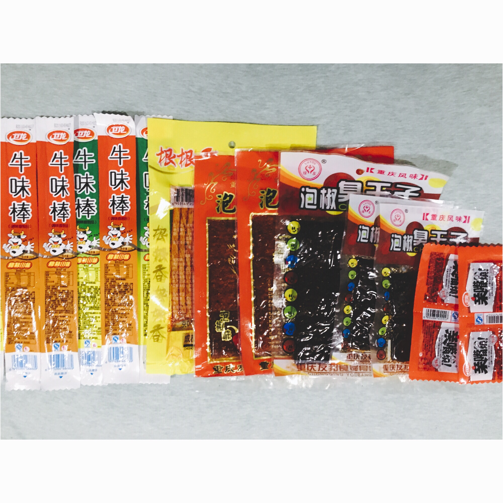
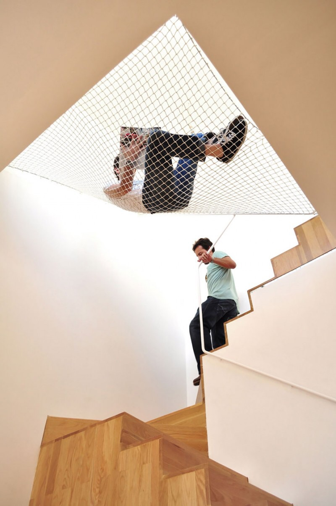
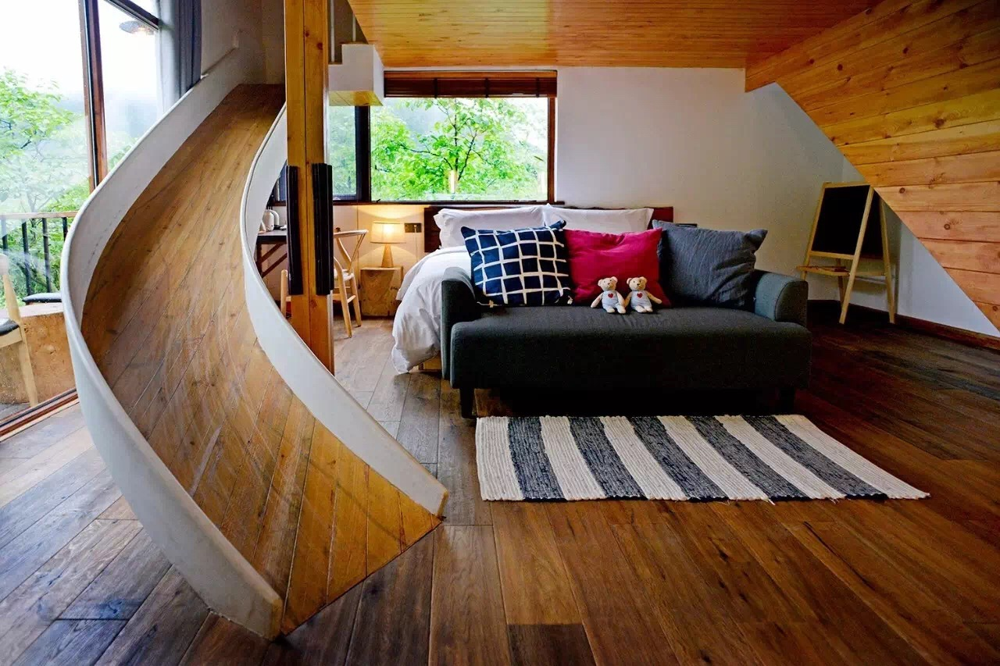
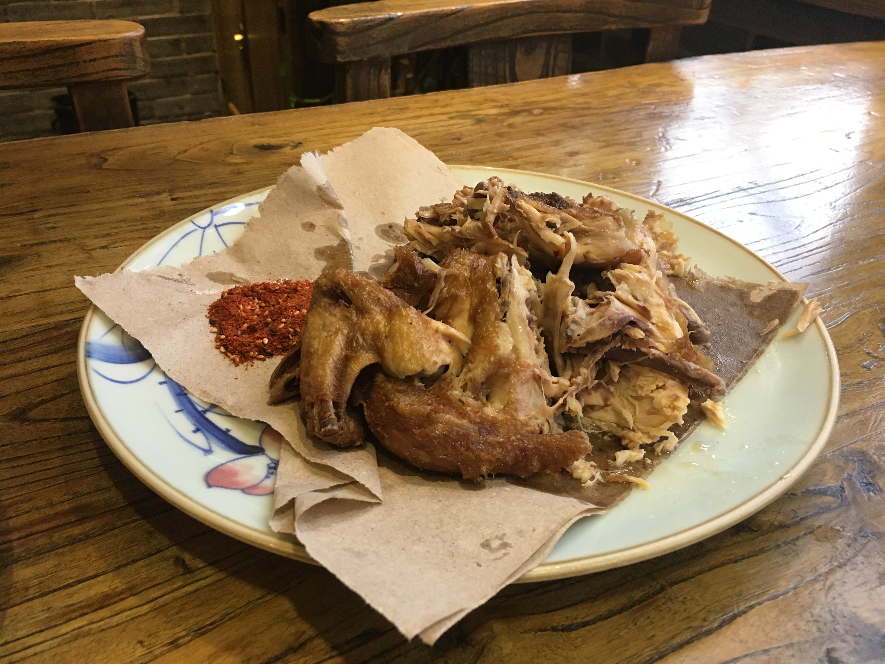

关于我
皮迪，坐标成都，90后，从事少儿编程教育的网页产品经理，前端菜鸟一名，正在创作自己的第一个博客。
我的相册
   
在谈话进行到关键对话时，我们应该如何应对？《关键对话》这本书给我们介绍了一些有效的对话技巧。 关键点一：保证对话的安全感 保证对话安全感的方法：...
内容非原创，从网络上收集得来。 一、住宅建筑划分： 低层是指高度低于或等于10m的建筑物，一般是1-3层，比如平房、别墅等。低层建筑一般建筑结构...
一、企业内容管理的定义 企业内容管理(ECM)的定义：企业对企业全部内容的整个生命周期进行管理的技术、战略、过程、方法和系统。其中两个关键词分...
电影讲述了一个荒唐的故事：在一所农村小学，校长连同其余三位老师虚报了一位根本不存在的老师-吕得水，从而每个月多领一位老师的工资，后来为了掩盖这件...